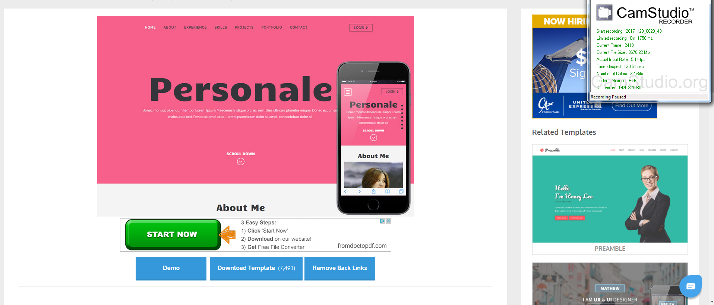
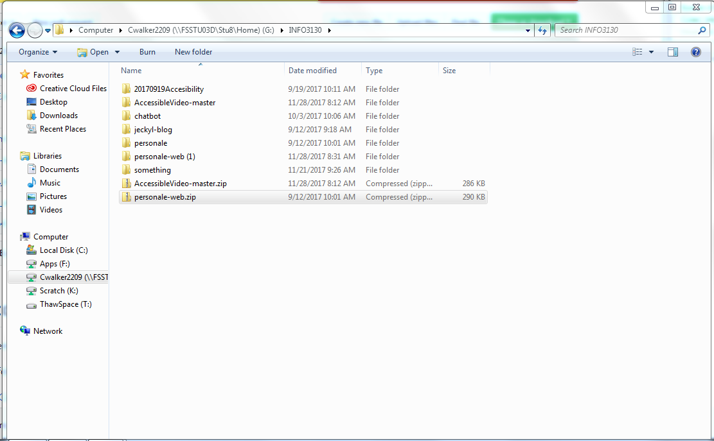
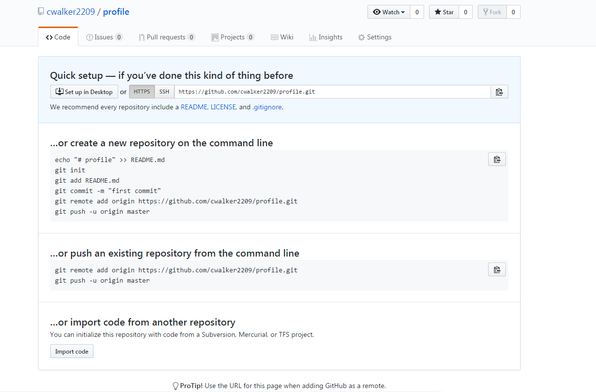
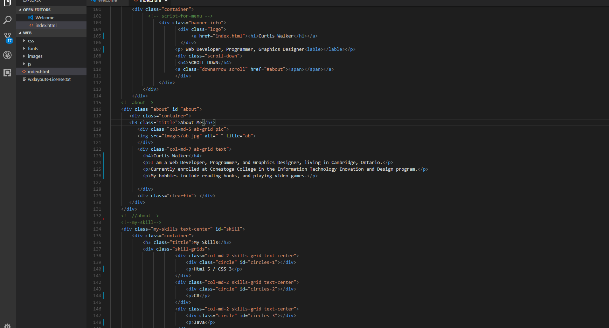
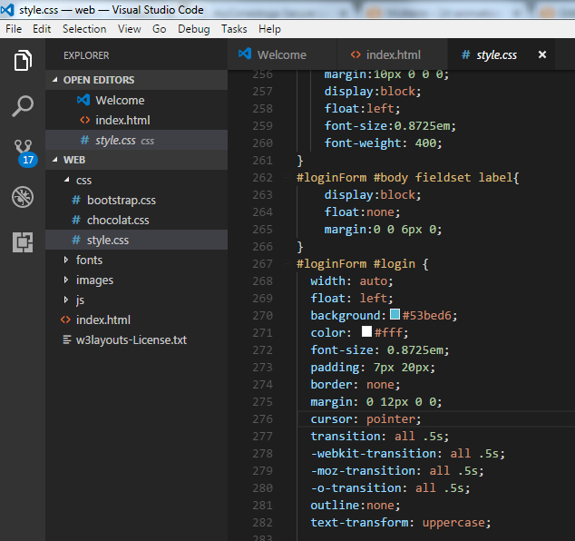
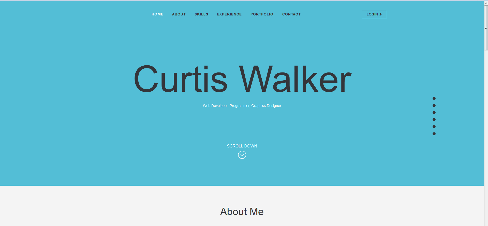

How to make a profile
Video Guide
Picture Guide

1. First find a template and download the zip file
2. Extract the zip file to the location you want to work on it
3. Create a new git hub repository and commit the files to it. Use your username followed by .github.io to display the page using github.
4. Change the text in the template to the text you want to put in your profile.
5. If you want to, change the styles to futher personalize your portfolio
6. Upload your completed profile to github or another host in order to view it